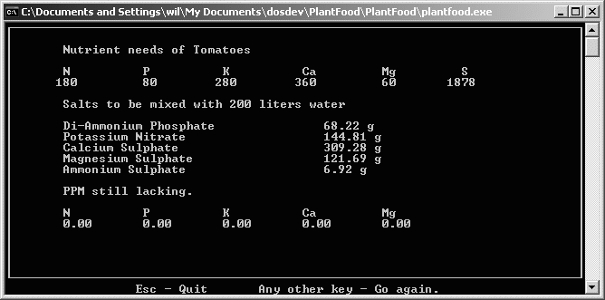

PlantFood is a program used in hydroponics, It is used to calculate the amount of salts needed to get a desired PPM ratio.
2005-03-12: Released under the Open Source GPL license.
This is the one of the first programs I have ever written! I wrote it around 1991, and it was originally written in Turbo Pascal, I have since ported it to Free Pascal
It is a console application, so its not using an exactly modern interface.
The reason I wrote the program was, at the time my Dad was very much into hydroponics and kept asking me to calculate how much of this or that he needed to mix. Necessity it the mother of invention and the rest is history.
I took Pascal at school, loved the Borland IDE at the time, I remember being quite excited about Turbo Pascal, or anything PC'ish for that matter.
I started a C++ port but never finished it. If you want it though, just mail me.
This is one of those sentimental things for me, anyway if you could use/improve on it go ahead!

Download PlantFood including source files PlantFood.zip (34,237 bytes)
Send your patches and comments to William.Bell@frog.za.net
{kind=link}